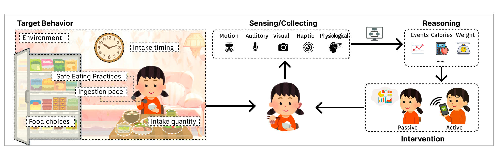
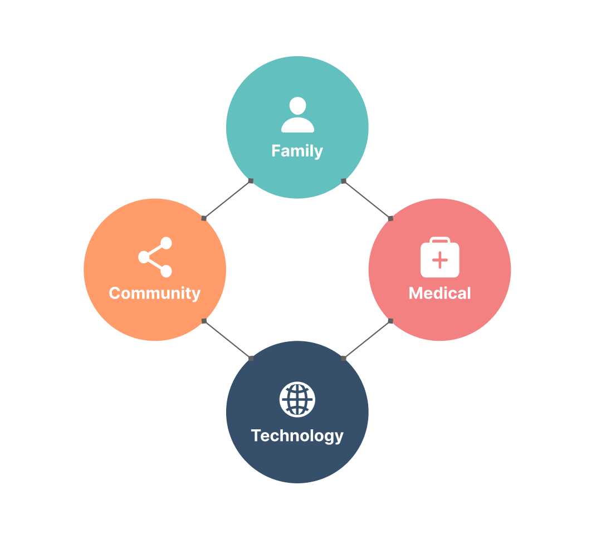
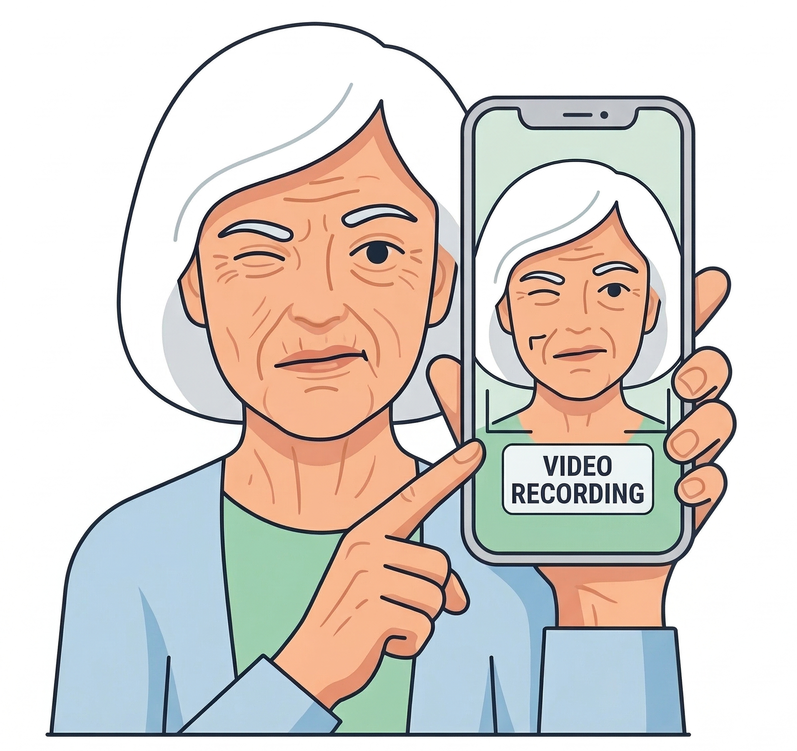
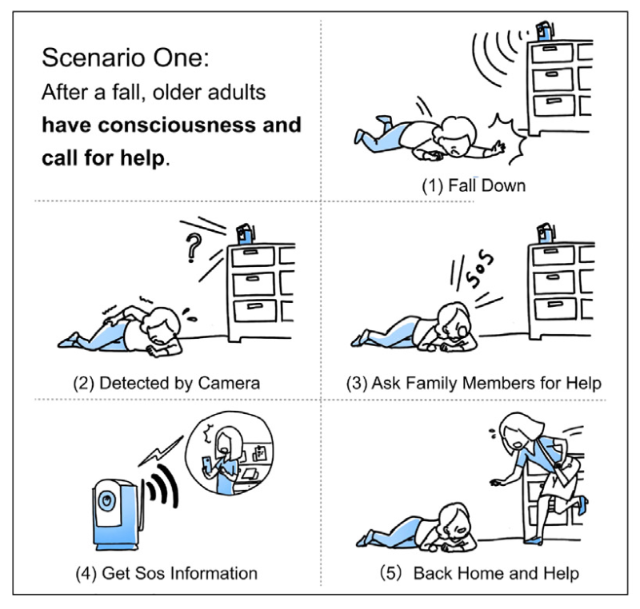

I am a first-year Ph.D. student at University of Michigan School of Information, advised by Professors Sun Young Park and Mark W. Newman. Before Michigan, I earned a master's degree in Data Science and Information Technology and a bachelor's degree in Psychology from Tsinghua University, where I was advised by Professors Yuanchun Shi and Yuntao Wang.
My research interests lie at the intersection of Human-Computer Interaction, Health Informatics, and Human-Centered AI. I investigate how LLM-powered systems can support people's health and wellbeing — from navigating conflict in intimate relationships to managing the challenges of cancer care — focusing on when and how these systems should intervene in sensitive contexts, and what makes them adaptive, supportive, and acceptable.



